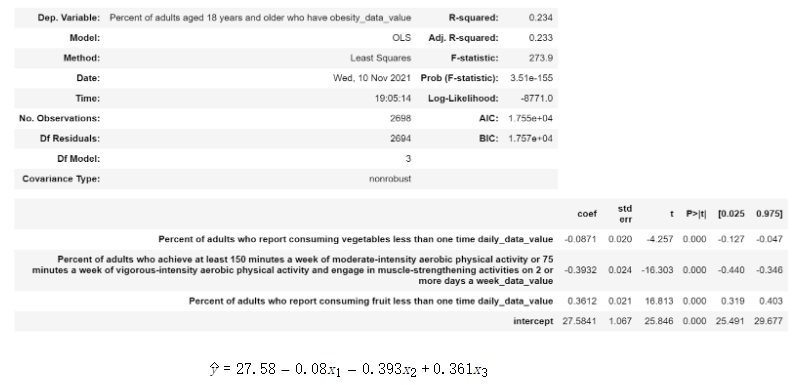
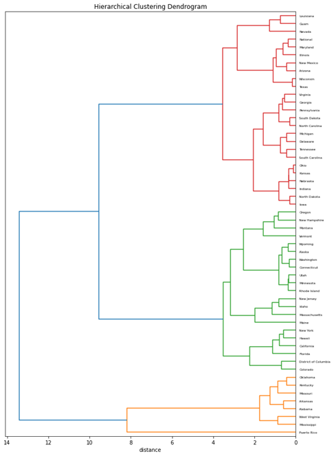
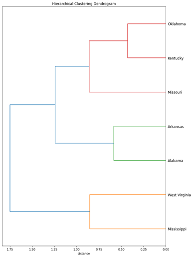
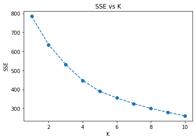
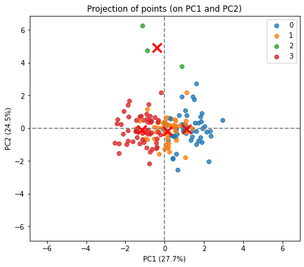
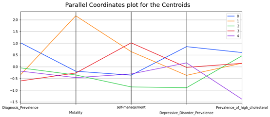

Life Styles and Diabetes
Keeping a healthy life style is important for all people. For people who are diagnosed with diabetes, though the arsenal of drugs for mainting blood sugar continues to expand, people can still achieve better levels with less medication if they lose weight, eat right, and engage in physical activity. For others, lifestyle changes can help with prevention of diabetes, and many more dangerous conditions like heart disease. Eating real food like fruits and vegetables, losing weight and becoming more physically active can help with blood sugar management and also improve the quality of life. But how do we quantify their impact on our health? Here is our attempt to figure it out.
First, we propose two hypothesis:
Null hypothesis: There is no association between vegetable, fruit consumption, and obesity rate.
Alternative hypothesis: There is an association between vegetable, fruit consumption, and obesity rate.
To verify the hypothesis, we choose the Linear Regression Model. Besides, we also train SVM, Naive Bayes and KNN models on the data. SVM and KNN are suitable for such continuous variables while Naive Bayes can also be used if we divide the variables into different bins.

We train models using U.S. community survey data sets. At the same time, to find the relationship between lifestyle and obesity rates, we choose the following three columns: percent of adults who achieve at least 150 minutes a week of moderate-intensity aerobic physical activity or 75 minutes a week of vigorous-intensity aerobic physical activity and engage in muscle-strengthening activities on 2 or more days a week; percent of adults who report consuming fruit less than one time, consuming vegetables less than one time as the x-axis. For y, we choose the column: percent of adults who have obesity.
After that, we use 10-fold cross-validation to test the accuracy of the algorithm. For each data set, divide the data set into ten, and take turns using 9 of them as training data and 1 as test data for experimentation. Each test will get the corresponding correct rate (or error rate).
Linear Regression
After training Linear Regression model on the data, we get the following result:
The R score is 0.234 which is small enough. When coming to the coefficients, the result is kind of complex. For vegetable intake, we find there is no significant influence on obesity (-0.0871), which is quite counter-intuitive. The lower fruit consumption will bring out the high obesity rate. So do the weekly exercises. In general, some of our hypotheses have been proved while some are not. Maybe aating vegetables could help us become healthy but cannot avoid obesity. Therefore, we cannot reject the null hypothesis.
KNN
After cross validation, we have the score: 0.6796.
For the KNN model, the score is not good. We believe that the reason why the KNN score is not high is that the KNN method mainly relies on the limited neighboring samples around, rather than the method of discriminating the class domain to determine the category, and for the three attributes we selected, the intersection between them or There is not much overlap, resulting in a low KNN score. At the same time, our sample size is not high which only has thousands of data and the use of KNN may cause misclassification, and may also lead to a low final score.
Naive Bayes
After cross validation, we have the score: 0.7154.
Since the Bayesian classifier assumes that the features are independent of each other, and in real life, people with more vegetables may also consume more fruits, so the attributes are not completely independent, which leads to the model's prediction There is a certain loss in accuracy. The Bayesian model also assumes that the feature characteristics meet the Gaussian distribution. In our data, because the amount of data is not large enough, the overall distribution of the data may not meet the Gaussian distribution, which will also bring a certain accuracy loss.
Hierarchical Clustering
We plotted the hierarchical clustering dendrogram for different states to find similar behavioral patterns.
A part of sub clusters formed as shown below:
This figure suggests that people among these states have similar behavioral risk patterns, such as obesity rate, physical activity and the likelihood of consuming more vegetables. According to the most recent Behavioral Risk Factor Surveillance System data, most of them appeared to be the US states with the highest diabetes rates (for example, West Virginia, Mississippi, Alabama, Arkansas):

If we just plot the percentage of adults who engage in no leisure time physical activity, we can see that these southern states are still have higher value, which confirms the clustering result.

K-Means Clustering
We also conducted K-means clustering on reaaranged chronic disease dataset, where each column contains the data for a specific survey question. We would like to investigate the following question: diagnose prvalence rate, motality rate due to diabetes, percent of diagnosed people who Take self-management courses, prevalence of high cholesterol among diagnosed diabetes.
We used Elbow method, which compares the average distance of the center of each point for different numbers of clusters. The plot is shown as below:
The figure suggested that K = 4 is a solid choice. The model generates the following scatter plots:
Cluster 2 has few data points that could be outliers. Overall it does a reasonable job, but there are a certain number of points that are hard to be separated as there are very dense regions. A parallel coordinate plot for the clusters and centroids are shown below:
The high mortality rate is certainly positively related to the prevalence of high cholesterol with diagnosed diabertic patients, as the purple clusters have the lowest rankings of mortality and also lowest ranking of high cholesterol prevalence. Blue clusters represent a group that develops high cholesterol along with diabetes and most likely has depressive orders. The counter intuition is that as red and orange clusters suggest, certain groups of people take self-management courses, but somehow they don't manage to lower their high cholesterol, and the mortality rates still remain high.